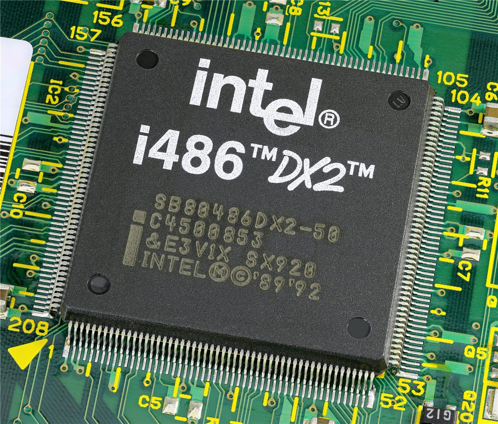

TSMC 황런자오 “대미 투자 확대엔 두 가지 이유”… 내년 외국인 달러 배당
TSMC의 황런자오 최고재무책임자가 미국 투자를 늘리는 두 가지 이유를 설명했다. 내년부터 외국인 주주에게 미국 달러로 배당을 지급할 계획도 밝혔다.
유선경 기자 · 2026.07.20
橋대만

TSMC 황런자오 CFO가 대미 투자 확대의 이유를 두 가지로 제시하고, 내년부터 외국인 투자자에게 달러 배당을 지급할 수 있다고 밝혔다고 연합보가 전했다. 세계 최대 파운드리 기업의 해외 투자 전략에 시장의 관심이 쏠렸다.
광고 문의 · 300×250반도체 제조는 고객 근접성과 공급망 안정, 그리고 각국의 산업 정책이 맞물리는 사업이다. 최대 시장 가까이에 생산 거점을 두면 고객 대응과 리스크 분산에 유리한 측면이 있다.
달러 배당은 환율 변동에 노출된 외국인 주주의 편의를 높이는 조치로, 글로벌 투자자 기반을 넓히려는 포석으로 해석된다.
華橋時報는 특정 기업의 전략을 평가하기보다 그 파급을 균형 있게 전한다. 반도체 공급망의 지리적 재편은 대만·미국뿐 아니라 한국과 중화권 경제에도 연쇄적인 영향을 미친다.
출처·참고 (사실 확인용 — 본문은 직접 재작성)
· 聯合報
· 聯合報